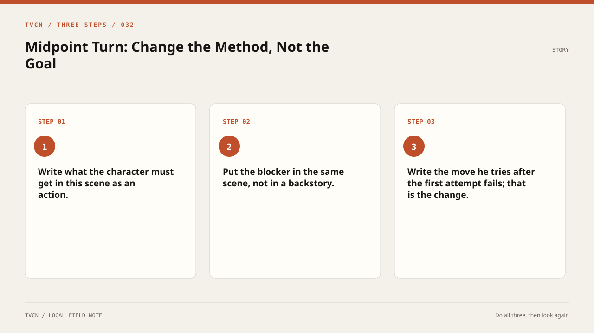

Change the method, not the goal
The midpoint is not a plot twist; it is the hero discovering that the old method fails and choosing a different approach. The goal remains, the cost rises, and the audience sees a choice rather than a writer pushing.
Test it by writing “what he plans to do” before and after. If both lines say “try harder,” there is no turn. If the second line is a new action, the turn exists.
Limits
Do not let a new character or a new piece of information make the decision. The midpoint must turn on his own action, or the final choice has no weight.
On set
On one page, put the old method on the left and the new method on the right; the goal line stays the same. Three concrete actions in each column so the change is visible.
Three-step flow

Do this
Midpoint is not a plot twist; the character changes method for the same goal.
- Use one A4: old method on the left, new method on the right, goal unchanged above.
- Write three concrete actions per column that look different on screen.
- Shoot the difference so the audience sees the method change, not hears “I changed.”
Avoid
Do not make midpoint a twist; same goal, new method is the turn.
Image note. Covers, diagrams and step images on this page are editorial illustrations or structure diagrams, not photographs of a test performed here; they are not evidence of measured gear performance. Where an image is AI-assisted, the caption says so. Read the test conditions in the text before treating an image as proof.